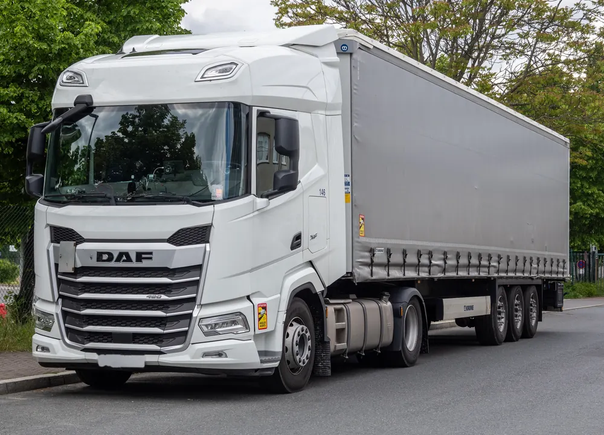
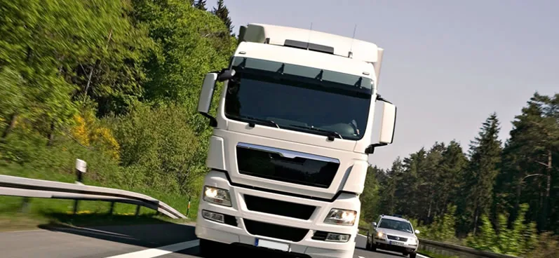
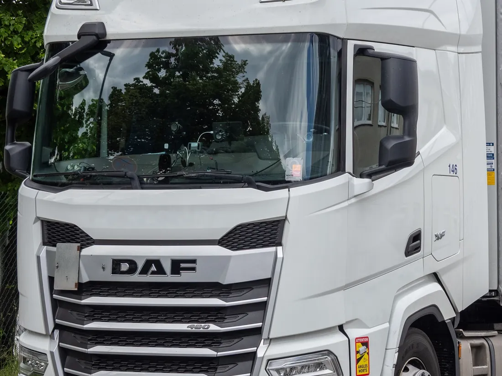
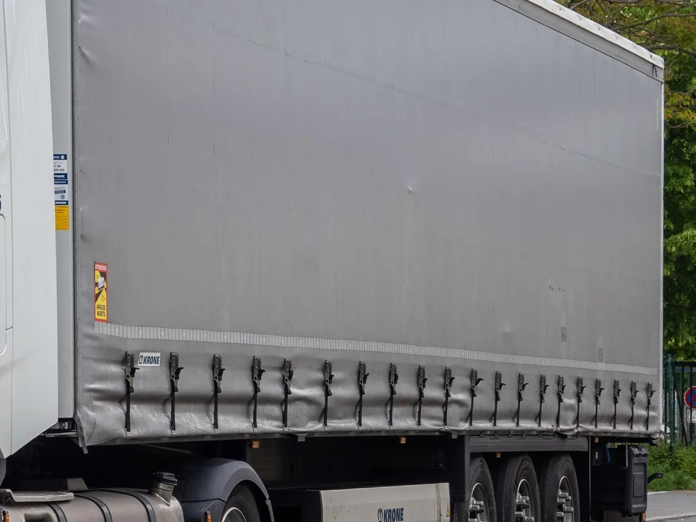
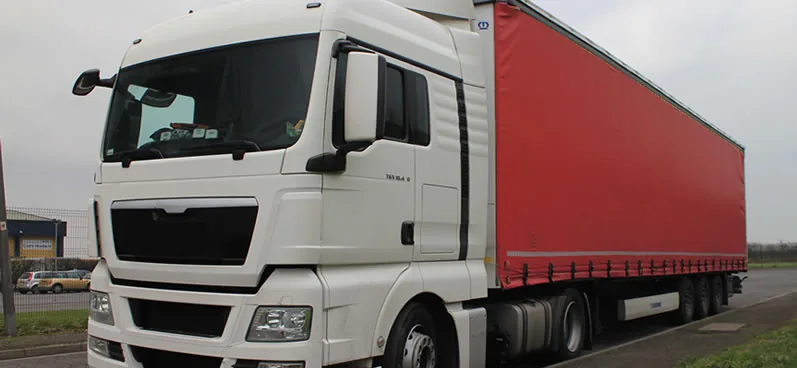

Partner w transporcie, nie tylko przewoźnik
Transport krajowy i międzynarodowy z Tczewa, od 2007 roku. Własne ciągniki DAF z naczepami KRONE firanka i burtofiranka z certyfikatem XL, ładowność do 25 ton.
Zapytaj o transportPartnerzy mają wspólny cel
Od początku pracujemy tak, żeby być dla klienta partnerem, a nie tylko kontrahentem. Wspólny cel jest prosty: ładunek dojeżdża na czas i w takim stanie, w jakim go oddaliście.
FHU PIORUN Alicja Piorun działa w Tczewie od 2007 roku. Wozimy własną flotą, na terenie Polski i w całej Europie. Z każdym zleceniem przybywało doświadczenia, a dziś podejmujemy się także zadań, które wymagają dokładnego zaplanowania trasy, terminów i zabezpieczenia ładunku.
Najważniejsze jest dla nas to, żeby Wasi kontrahenci widzieli w transporcie przedłużenie Waszej firmy: punktualny, czysty i przewidywalny.




Własny tabor
Wozimy własnymi zestawami, więc wiemy, co jedzie, kto prowadzi i w jakim stanie jest sprzęt.
- Ciągniki
- DAF, nowoczesne ciągniki siodłowe
- Naczepy
- KRONE, firanka i burtofiranka
- Certyfikat XL
- wzmocniona zabudowa, ładunek zabezpieczony zgodnie z normą
- Wysokość załadunkowa
- 2,68 m / 2,76 m
- Ładowność
- do 25 ton
Kierunki w Europie
Specjalizujemy się w transporcie międzynarodowym. Najczęściej jeździmy do 13 krajów, od Estonii po Rumunię, a w Polsce wszędzie tam, gdzie trzeba.
- Polska
- Niemcy
- Holandia
- Belgia
- Luksemburg
- Czechy
- Słowacja
- Austria
- Węgry
- Rumunia
- Litwa
- Łotwa
- Estonia
Dokumenty przewoźnika
Mamy wszystkie uprawnienia do zarobkowego transportu drogowego rzeczy. Na gotowej stronie każdy dokument otworzy się jednym kliknięciem.
Licencja międzynarodowa
Licencja na wykonywanie międzynarodowego zarobkowego przewozu drogowego rzeczy.
Ubezpieczenie OCP
Odpowiedzialność cywilna przewoźnika w transporcie krajowym i międzynarodowym (CMR).
Certyfikat TCC
Trans.eu Certified Carrier, certyfikat nr 334291.
NIP i REGON
NIP 743 135 50 07
REGON 220454104
Wpis w CEIDG
Sprawdź status firmy i licencje na rządowej stronie.
Otwórz CEIDGZapytanie o transport
Napiszcie, skąd i dokąd jedzie ładunek. Odpowiemy z wyceną i terminem.
FHU PIORUN Alicja Piorun
ul. Pionierów 16
83-110 Tczew
- Komórka512 324 800
- Biuro58 531 20 76
- E-mailfhupiorun@wp.pl